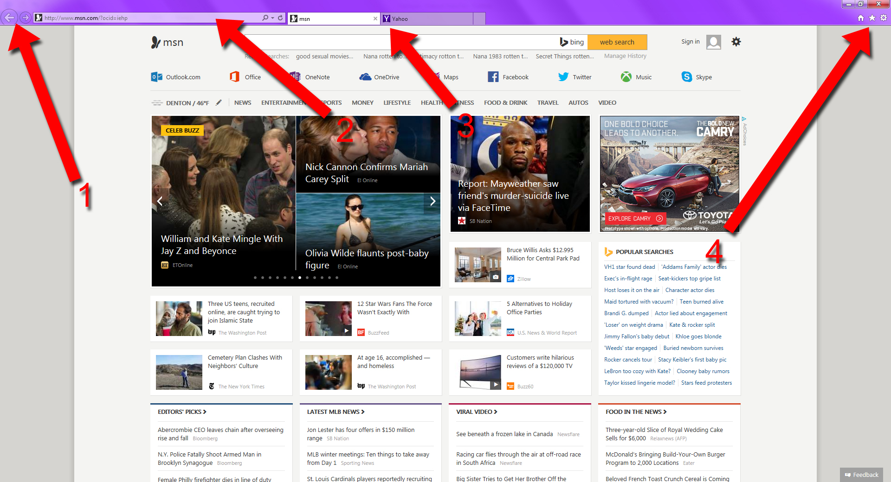
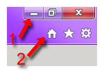

Lesson Navigation
Internet Browser Lessons (Basics)
Welcome to The Internet Browser Lessons!
In this lesson, you will learn the basic parts and functions of an internet browser, as well as information about how to safely browse the internet.
In order to access websites on the internet, you must first have an Internet Browser installed on your computer. Luckily, most computers will come with an internet browser to begin with (as it is included in the Operating System software your computer comes with, such as Windows 7). Internet browsers connect to other computers on the internet, called servers, and request web pages. When you attempt to go to a website, your browser makes the request for the web page which is sent to the server computer. The server computer sends back the necessary information (the code which will make the web page) and then the internet browser makes sense of the code to display a web page, such as google.com, for you.
Internet browsers know which server to send the request to, because you type in a web address in the bar at the top. That web address acts as a unique identifier for each server computer in the world. Two different websites will never have the exact same web address.
You will find all the basic elements of a web browser in the diagram below.

1. Backward and Forward Navigation Buttons
These buttons will take you back to the page you were previously on, and forward to a page you were on after the current. For example, you go to google.com and then you go to yahoo.com. If you click the "Back" arrow while on yahoo.com, it will take you back to google.com. If you click on the "Forward" arrow while on google (after going back to google from yahoo.com) it will return you to yahoo.com.
2. Address Bar
This is where you type in the address of the website you want to go to. After you type it in and verify that the address is spelled correctly, hit "enter" on your keyboard. You can also use the circle shaped arrow next to this address bar to refresh the page you are currently on.
3. Tabs
This is how you open multiple pages at the same time. You can open a new page by clicking on the new
tab space (To the right of the "Yahoo" tab in this example) or close a page by clicking on the "x" to
the right of the page name (in this case, to the right of "MSN").
4. Right Side Controls
Every web browser seems to have right side controls. These controls are detailed in the next diagram below.

1. Minimize, Maximize/Restore Down, and Close.
You will find these three buttons on every program window. The first one that looks like a line will minimize the window so that all you see of it is the program icon at the bottom of your computer screen. The second one that looks like some boxes will make the window either fit your computer screen or make it small so you can click and drag it around to different parts of the screen. The third one that looks like an "X" will close the window and shut down the program. You shouldn't use this "X" button unless you are done with whatever you are working on, and you have saved anything as neccessary.
2. Browser Controls (Home, Favorites, Settings)
These are the controls for your browser. The button that looks like a house is called the "Home" button.
It will take you to whatever you have set as your browser's homepage. The star shaped button is where
you can find the list of all your bookmarks or "favorites". The gear shaped button is where you will
find all of the settings for your browser. We'll talk more about browser settings in each browser specific lesson.
In the same way that most web browsers function in the same way, most web pages can be navigated in the same way. In order to navigate to different pages on the same website, you click on special text, buttons or images called hyperlinks. An example of a hyperlink can be found below. It's the blue text that says "google.com". If you click the hyperlink, it will take you to google.com. However, don't click the hyperlink just yet unless you know how to get back to this page!
Hyperlinks have a web address saved inside them that will direct your web browser to the next page. When you click on a hyperlink, it will take you to the website that is saved inside it.
Think you understand? Try using the google.com hyperlink above and then clicking the "back" button of your browser to return to this page.
Now that you know how an internet browser works and what its parts do, it's time to learn a little about internet safety. Click on the "Next Lesson" button below in order to navigate to the next page.
Helpful Links:


The Simply Social brand is Simply Social Inc. 2014. Simply Social only owns the Simply Social logo, and all other images are copyrighted by their respective owners. The sources for these images, as well as the website icons, can be found in the about page. This website was made for a class project, and is not intended for any kind of commerce or commercial use. Simply Social is not affiliated in any way with any of the other websites mentioned or linked to in this website.